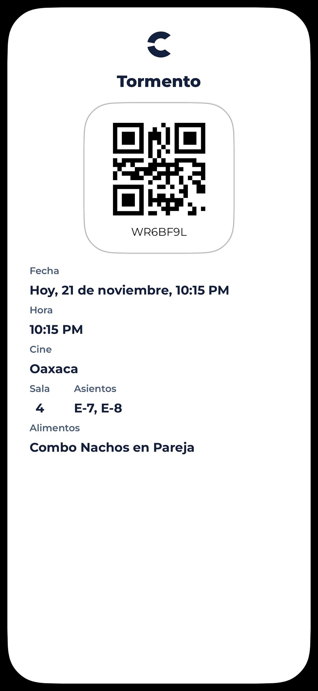

commit 0007
Date: 21 Nov 2025
🟡 First Kiss
🟢 Git Message
feat: friendship reached a turning point
⚪ Story
Aquel viernes saliendo del hospital después del trabajo.
Habíamos quedado de ir al cine.
Era la función de las 10:15 de la noche.
Recuerdo que llegué con muchos nervios.
Tú ya habías comprado el combo, así que durante la película lo compartimos.
Hubo un momento que todavía recuerdo muy bien.
Me diste de comer en la boca nachos creo
Y, aunque hoy me hace sonreír, en ese instante me dio muchísima pena y fue algo incomodo.
Para mí era un gesto que solo imaginaba dentro de una relación.
Cuando terminó la película caminamos hacia el estacionamiento.
Nos subimos al carro camino a tu casa, seguimos platicando un rato.
Y entonces...
Llegó nuestro primer beso.
No fue un momento planeado. No para mi
Simplemente pasó.
Hablabamos de que si fueras mi shugar entre bromas y risas, te dije:
> "Ya bájate, corre."
Más tarde te mandé un mensaje.
En el fondo quería asegurarme de que aquel beso no cambiara para mal la amistad que habíamos construido durante los últimos meses.
Con el tiempo entendí que aquel viernes comenzó como cualquier otro después del trabajo, pero terminó convirtiéndose en uno de esos días que cambian una historia sin que uno se dé cuenta en ese momento.
🟣 Developer Notes
Friendship evolved.
First kiss successfully archived.
Relationship variables updated.
🟢 Impact on Project
First kiss archived.
Emotional connection increased.
New chapter unlocked.
🟢 Commit Status
✔ Completed
✔ Reviewed
✔ Ready for Release
🖼 Recuerdos

El boleto de una noche que comenzó como cualquier otra... y terminó siendo el inicio de mucho.